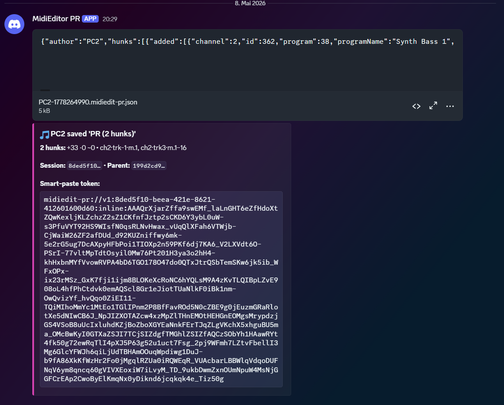
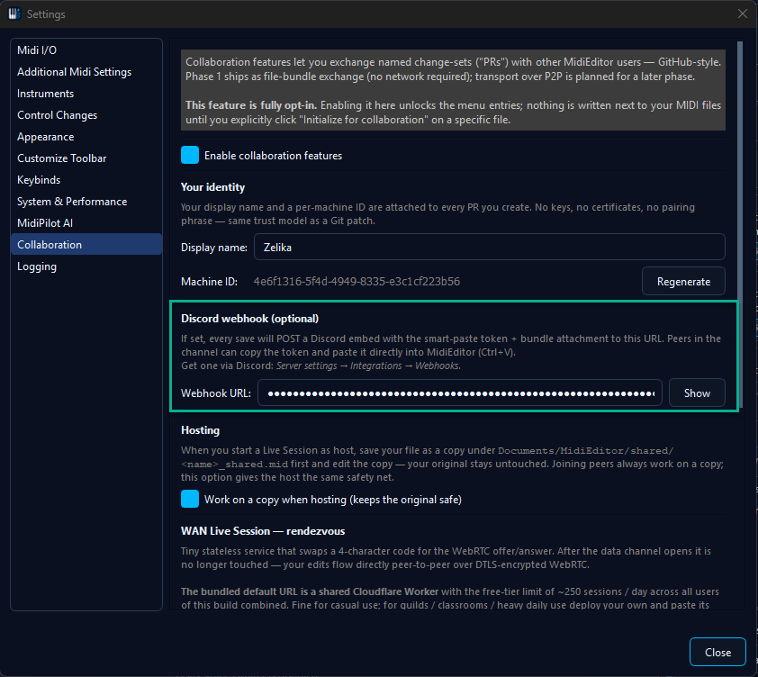

📢 Discord Webhook Integration
Hook MidiEditor AI's Create PR action up to a Discord channel via a webhook URL. Every PR
posts a summary embed plus the smart-paste token, so band members can drop into the editor with
Ctrl+V.

When to use it
Webhook posting beats sending a token directly to one person whenever your audience is a community: a band Discord server, a music guild, a class of students. Pinning the channel preserves an audit trail of "who shared what, when". And because MidiEditor signs every PR with your display name, channel members can attribute changes without asking.
Set the URL once in Settings, then every Create PR click also posts to the channel. You can opt out per PR with a checkbox in the Create-PR dialog - useful for a private one-off you don't want broadcasted.
Discord-side setup
Discord's own documentation walks through webhook creation in detail and stays in sync with their UI changes. Use that as the canonical reference: Discord · Intro to Webhooks →
The short version, for quick orientation:
- Open the Discord server where you want PRs to land. Right-click the server name → Server Settings.
- Pick Integrations from the left sidebar, then Webhooks.
- Click New Webhook. Pick the target channel; optionally set a name and avatar so the message attributions look right.
- Click Copy Webhook URL.
You only need this once per channel. Discord lets you create as many webhooks as you like - if you want different MidiEditor users in the same Discord server to post under different names, give each their own webhook (each user pastes their own URL into Settings).
MidiEditor side

Open Edit → Settings → Collaboration, scroll to the Discord webhook section, paste the URL into the field, and close the dialog. From here on, every Create PR action that leaves the per-PR opt-out checkbox checked also posts to your channel.
What gets posted
The posted message is a Discord embed plus the token in a code block. The embed shows:
- The PR's title and message exactly as you typed them
- Your display name (from Settings → Collaboration → Identity)
- The number of commits and hunks bundled into the PR
- The source file name
The token follows in a triple-backtick code block, so it renders as
monospace and can be selected with one click. MidiEditor's paste
handler trims the surrounding backticks automatically, so the
recipient just copies the whole block and presses
Ctrl+V - no manual cleanup.
When NOT to post
A few situations where you'll want to leave the per-PR opt-out unchecked:
- Sensitive content. The PR is for one person specifically. Send the token directly instead.
- Rapid iteration. You're sharing 5 PRs in 5 minutes - each post fires a Discord notification. Pick one combined PR at the end of the session instead.
- Wrong channel. You're testing or experimenting and don't want the experiment archived in the team channel.
Discord enforces a server-wide rate limit on webhooks (roughly 30 posts per minute per channel). MidiEditor doesn't queue beyond that; if you hit the limit, the post fails with a 429 and the dialog tells you. The token is still on your clipboard so you can paste it manually somewhere.
Troubleshooting
- "Webhook URL invalid" - the URL must start with
https://discord.com/api/webhooks/<id>/<token>. Common mistake: copying the channel URL instead of the webhook URL. Re-do the Discord-side setup and click the Copy Webhook URL button explicitly. - 429 rate limit - Discord rejected the post because you're posting too fast. Wait a minute and try again, or post less frequently.
- Token didn't import on the receiver - the recipient copied only part of the message. Make sure they grab the full token including everything between the triple backticks. MidiEditor trims whitespace and backticks automatically, but it can't reconstruct a truncated token.
- "PR is from a different session" on the receiver - the recipient has a different version of the file open. They need the same source MIDI you started from.